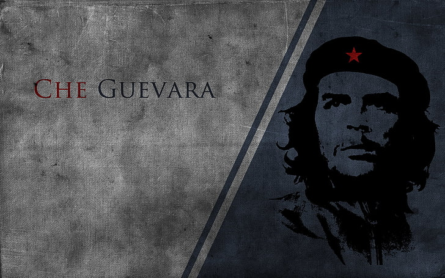

Motivational poster
CHE GUEVARA
Ernesto "Che" Guevara (14 June 1928 - 9 October 1967) was an Argentine Marxist revolutionary, physician, author, guerrilla leader, diplomat, and military theorist. A major figure of the Cuban Revolution, his stylized visage has become a ubiquitous countercultural symbol of rebellion and global insignia in popular culture.
As a young medical student, Guevara travelled throughout South America and was appalled by the poverty, hunger, and disease he witnessed. His burgeoning desire to help overturn what he saw as the capitalist exploitation of Latin America by the United States prompted his involvement in Guatemala's social reforms under President Jacobo Árbenz, whose eventual CIA-assisted overthrow at the behest of the United Fruit Company solidified Guevara's political ideology. Later in Mexico City, Guevara met Raúl and Fidel Castro, joined their 26th of July Movement, and sailed to Cuba aboard the yacht Granma with the intention of overthrowing US-backed dictator Fulgencio Batista.Guevara soon rose to prominence among the insurgents, was promoted to second-in-command, and played a pivotal role in the two-year guerrilla campaign that deposed the Batista regime.